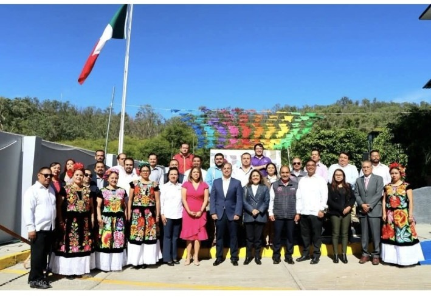
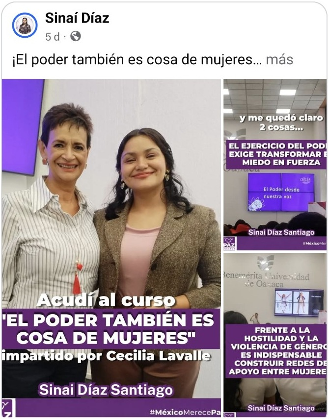
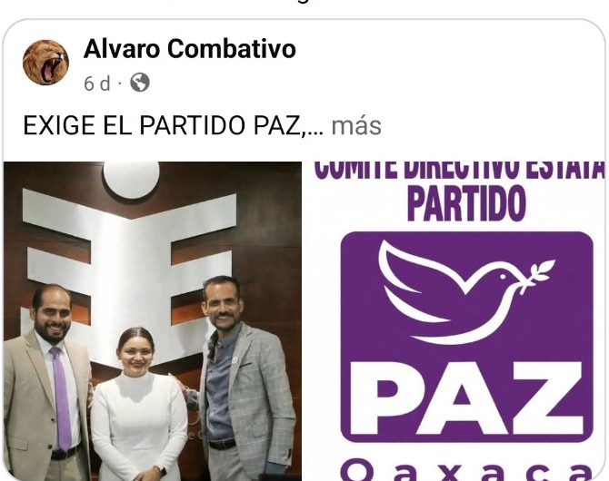
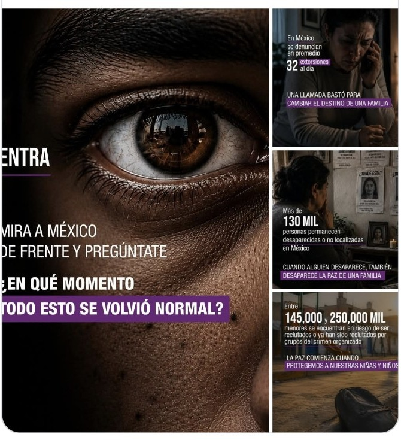

Escuchar
Canales para recibir inquietudes, propuestas y solicitudes.
Una propuesta institucional para reunir información, participación ciudadana, actividades y presencia territorial de PAZ Oaxaca en un mismo espacio digital.



PAZ Oaxaca comunica actividades, posicionamientos y espacios de participación ciudadana. Esta propuesta organiza esa información en una plataforma clara, visual y fácil de consultar.
Canales para recibir inquietudes, propuestas y solicitudes.
Actividades y espacios ciudadanos organizados en un solo portal.
Noticias y comunicados con fecha, categoría e imagen.
Presencia territorial y contacto con distintas regiones del estado.
La arquitectura puede organizar contenido por municipio o región sin perder una identidad común para PAZ Oaxaca.
Calendario, reuniones, encuentros y eventos institucionales con información accesible desde celular.
Noticias y enlaces pueden clasificarse por región para facilitar la consulta y el crecimiento del portal.
La página puede destacar actividades, capacitaciones y encuentros mediante notas completas con fotografías y categorías.
Comunicados, presencia en actos públicos y documentación relevante pueden organizarse cronológicamente.
El portal puede integrar campañas y contenidos que actualmente se comparten en redes sociales.

La versión completa puede incorporar formularios, solicitudes, eventos, documentos, representantes y un panel administrativo para actualizar el contenido sin modificar el código.
Enviar correo